OneTrans-V2：在工业推荐系统中用单个 Transformer 统一召回、粗排和精排
摘要
工业推荐系统通常以召回、粗排和精排的级联形式运行，但这些阶段通常被分别训练和部署，导致用户序列被重复编码、优化相互孤立以及工程投入重复。在 OneTrans 模型级统一的基础上，我们提出 OneTrans-V2，用一个 Transformer 统一整个级联。它将用户行为序列编码一次作为共享上下文，同时保留各阶段特有的候选特征与计算。联合训练使三个阶段能够相互促进，并支持从精排到粗排的模型内知识蒸馏。我们用稀疏混合专家（MoE）扩展共享骨干网络，从而在有界激活计算下提升容量，并用 P 式参数化稳定扩展过程。为整合面向不同目标的召回通道，我们引入决策条件生成式召回（DCGR）。DCGR 预测描述即将发生的交互的决策前缀，并以该前缀为条件生成物品，从而使业务目标能够引导单一的生成过程。最后，序列原生训练（SNT）围绕每个用户的终生行为序列组织训练，并将其编码开销分摊到多次曝光上。OneTrans-V2 已部署于大规模工业推荐系统的全部三个阶段，使商品交易总额（GMV）提升 9.74%，并且在协同设计的服务栈下，于相同硬件预算内达到其所替代级联的 吞吐量。
1 引言
现代工业推荐系统以级联方式运行，以满足严格的延迟约束。召回从十亿级物品库中选出数千个候选，粗排以低成本的逐候选打分将其缩减到数百个，精排则利用更丰富的候选特征（包括用户–物品交叉特征）产生最终顺序。这种逐级缩减使十亿规模的推荐能够在数百毫秒内完成。
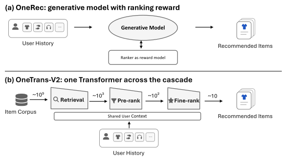
然而在传统级联中，召回、粗排和精排被独立设计、训练和部署，召回还可能为不同业务目标维护多个模型。这种碎片化在四个方面代价高昂。1）工程投入在各阶段之间重复。新的用户特征、更长的行为序列或模型扩展方面的改进，都必须为每个阶段分别实现、调优、验证和部署。2）同一用户行为序列被每个阶段重复编码，浪费大量计算。3）孤立优化的各阶段无法直接共享已学到的表示或监督信号，可能导致级联内部不一致。4）模型容量分散在多个专用模型中，限制了将整个级联作为一个整体进行扩展的能力。
单个排序模型也曾面临类似的碎片化问题。它们传统上依赖用于特征交互和行为建模的专用模块。我们此前的工作 OneTrans Zhang et al. (2026) 表明，这些组件可以统一在单个因果 Transformer 内。然而，这种模型级统一仍局限于单个排序阶段，召回、粗排和精排仍是独立模型。另一条路线以 OneRec OneRec Team (2025) 为代表，用端到端生成模型消除传统级联（图 1(a)）。尽管这提供了通向架构统一的直接路径，工业排序阶段却高度依赖丰富的候选特征。移除这些特征可能显著降低推荐质量 Han et al. (2025)。因此，我们采用保留级联的方法（图 1(b)）。我们没有消除级联，而是在统一各阶段共享的、与候选无关的用户上下文的同时，保留每个阶段原生的候选建模。
在 OneTrans 的基础上，我们提出 OneTrans-V2。它将基于 Transformer 的统一从单个排序模型扩展到整个推荐级联，把召回、粗排和精排表示为单个因果 Transformer 的三个任务。具体而言，在 OneTrans-V2 中，与候选无关的用户行为序列被编码为共享用户上下文，其状态在各阶段之间复用。每个阶段向该上下文追加自己的词元，并在 OneTrans 的混合参数化下使用词元特定参数来建模其异构特征。因此，行为序列对每个请求只编码一次，而不是每个阶段编码一次。三个阶段还进行联合训练，使它们能够改进共享用户上下文，而不是孤立优化。阶段可见性掩码（§4.1）控制阶段特定词元如何访问共享用户上下文。每个阶段可以读取共享用户上下文，但其词元与其他阶段的词元相互隔离，且不能修改该上下文。这种隔离允许每个阶段根据自身延迟和特征需求独立选择词元预算。粗排保持轻量，仅在小特征集上使用单个词元，而精排使用多个词元来建模其更丰富的候选特征。
除计算复用外，统一还将此前分散在专用模型中的容量汇聚到单个骨干网络中，使其可以作为一个整体进行扩展。然而，稠密扩展会在增加模型容量的同时增加计算和内存流量 Clark et al. (2022); Pope et al. (2023)。因此，我们用稀疏混合专家（MoE）Shazeer et al. (2017); Fedus et al. (2022) 扩展汇聚后的骨干网络，将总模型容量与激活计算和每词元内存流量解耦。随着骨干网络增长，我们进一步采用 P 式参数化，以稳定跨模型规模的优化。统一还简化了跨阶段知识蒸馏。粗排和精排传统上作为独立模型优化，可能产生不一致的候选排序 Wang et al. (2020); Zhao et al. (2023)。现有蒸馏方法 Tang and Wang (2018); Qin et al. (2022); Huang et al. (2023) 解决了这种不一致，但需要独立训练、打分和刷新单独的精排教师模型。在 OneTrans-V2 中，两个排序阶段是同一 Transformer 的任务，因此共享用户上下文并在同一步训练中更新。因此，精排可以在模型内直接监督粗排，提高两个阶段之间的一致性。
然而，召回对统一提出了独特挑战。在我们的生产系统中，不同业务目标需要不同的候选集。主通道面向点击和订单，而专用通道则促进发现或广告。因此，召回已演变为多个目标特定通道，每个通道都有自己的模型和解码过程。难点在于，这些通道的差异不仅在于预测什么，还在于召回什么。在粗排和精排中，候选已经给定，因此多个目标可以通过单独的预测头共享一次前向传播。在召回中，目标决定了最初生成哪些候选。因此，为每个目标保留单独的解码过程，恰恰会保留我们试图消除的碎片化。统一召回器必须改为在单一生成过程中表达多个业务目标。
我们用决策条件生成式召回（DCGR）解决这一问题。DCGR 不是直接从用户上下文生成物品，而是在物品生成之前引入一个中间决策步骤。模型首先预测一个决策前缀，表示用户条件下对即将发生的交互的分布。决策维度捕获与目标相关的结果，例如用户是否转化、以何种价值转化，以及该品类对用户而言有多新。然后，模型以该前缀为条件生成物品的语义标识符（SID）。通过这种方式，决策条件生成提供了链式思维推理的一种紧凑、非语言类比。模型将中间决策表示为决策词元而非自然语言，并用它们引导后续物品生成。 该决策空间还为业务目标提供了通用接口。我们不是为每个目标分配自己的召回通道，而是应用业务偏移，将预测的决策分布引向期望目标。该偏移改变决策前缀的优先级排序方式，同时使物品生成模型在多个目标之间保持共享。其强度作为在线参数暴露。因此，同一模型可以在不重新训练或新增召回通道的情况下权衡不同业务目标。
一旦三个阶段共享一个骨干网络，编码长用户行为序列就成为其主要的训练成本。因此，我们引入序列原生训练（SNT）。SNT 围绕每个用户的终生行为序列组织曝光，并将序列编码开销分摊到该用户的多次曝光上。每次曝光保留其对共享行为序列的各自因果视图，同时复用相同的用户侧计算。这带来 4.4 的训练加速。
我们将 OneTrans-V2 部署于大规模工业推荐系统的召回、粗排和精排。它使商品交易总额（GMV）提升 9.74%。在协同设计的服务栈下，OneTrans-V2 于相同硬件预算内达到其所替代级联的每秒查询数（QPS）的 。
总之，我们的贡献如下：
-
•
级联级单个 Transformer。我们将召回、粗排和精排表述为一个联合训练 Transformer 的三个任务，在各阶段之间复用与候选无关的用户上下文，同时保留每个阶段原生的候选特征、异构目标和服务预算。这种统一使计算复用、跨阶段知识迁移以及整个级联在单个骨干网络内的容量扩展成为可能。我们通过实验表明，与分别训练的对应模型相比，联合训练改善了全部三个阶段，而模型内蒸馏改善了粗排和精排之间的一致性。
-
•
召回中的目标整合。在我们的生产系统中，召回仍然按目标拆分为不同通道，因为它生成候选而不是对候选打分。我们引入 DCGR，它从行为序列预测用户条件决策分布，并以所得决策前缀为条件生成标识符。业务目标通过业务偏移引导该分布，因此一个生成模型无需外部路由规则即可覆盖多个目标。
-
•
生产高效的训练、扩展与验证。我们使用稀疏 MoE 在有界激活计算下扩展模型容量，采用 P 式参数化以稳定跨模型规模的优化，并引入 SNT 使统一骨干网络保持在生产训练预算之内。我们在大规模工业系统中验证了 OneTrans-V2，它使 GMV 提升 9.74%。在协同设计的服务栈下，OneTrans-V2 达到其所替代级联的端到端 QPS 的 。
2 相关工作
2.1 排序中的模型级统一
工业排序模型传统上结合用于特征交互和用户行为建模的专用组件，包括 DeepFM Guo et al. (2017) 和 DCN V2 Wang et al. (2021) 等特征交互架构，以及 DIN Zhou et al. (2018) 和 SIM Pi et al. (2020) 等行为编码器。 近期工作越来越多地将这些功能集成到统一的基于词元或共享骨干网络的架构中。 RankMixer Zhu et al. (2025) 强调通过词元混合实现硬件高效的特征交互，而 MTGR Han et al. (2025) 将丰富的候选特征纳入可扩展的序列建模。 TokenFormer Zhou et al. (2026) 和 OneTrans Zhang et al. (2026) 更明确地在单个排序模型内统一异构特征交互与用户行为建模。 这些工作共同证明了减少单个排序阶段内架构碎片化的价值。 OneTrans-V2 将这一方向从阶段内的模型级统一扩展到跨召回、粗排和精排的级联级统一。
2.2 从跨阶段协作到级联层面的统一
跨阶段方法已逐步从在独立优化的模型之间传递信息，演进为跨阶段直接共享表示与计算。 早期方法如 RankFlow Qin et al. (2022) 以及协同召回器与排序器（CoRR）Huang et al. (2023) 通过监督传播、自适应采样和蒸馏来提升跨阶段一致性，同时在很大程度上仍保留各自独立的参数、用户侧计算和服务路径。
OneRec OneRec Team (2025) 代表了统一级联的一种路线。 它围绕生成式召回重构推荐，其中排序通过面向排序的监督信号或策略信号被吸收进生成过程，而不是作为一个独立的在线阶段来服务。 同期工作如 Sona Sona Team (2026) 进一步将这一方向扩展到统一的编码器–解码器架构中的召回、粗排和精排。 与此同时，MTGR Han et al. (2025) 等特征丰富的工业排序器仍依赖于阶段特定的候选特征，这促成了在共享可复用计算的同时保留此类异构特征的设计。
第二条路线保留级联结构，但更紧密地耦合召回与排序。 UniPinRec Li et al. (2026) 在表示、训练和服务层面联合设计召回与轻量级排序，而 OneRanker Sun et al. (2026a) 和 UniSGR Sun et al. (2026b) 通过共享表示和面向排序的监督将生成式召回与下游排序相连接。 UniR2 Yang et al. (2026) 进一步将用户上下文、SID 生成轨迹以及排序侧物品特征词元置于单个异构的仅解码器序列中。 其排序查询直接关注生成轨迹，而生成轨迹充当从召回到排序的表示桥梁。共享的基础注意力参数、排序专用的 FFN 以及低秩适配（LoRA）在表示共享与任务适配、优化隔离之间取得平衡。
OneTrans-V2 采用第二条路线，但通过共享的用户上下文以及两个排序阶段之间的蒸馏损失来耦合各阶段。 与 UniR2 不同（其排序查询关注生成轨迹），OneTrans-V2 的阶段特定词元在前向传播中跨阶段保持隔离，而不是消费由另一阶段产生的中间表示。
2.3 决策条件生成式召回
生成式召回用语义标识符表示物品，并以用户上下文为条件自回归地生成候选，TIGER Rajput et al. (2023) 和 OneRec OneRec Team (2025) 即为例证。 近期工作进一步将目标相关信号融入生成过程。PinRec Botta et al. (2025) 以期望结果表示为条件进行召回，而 UniSGR Sun et al. (2026b) 则在前端添加针对点击、加入购物车和购买的学习型任务感知词元。
OneTrans-V2 的不同之处在于，DCGR 不将目标作为输入词元。 相反，它从用户上下文预测决策维度，并使用推断出的决策前缀来条件化后续的 SID 生成。 通过这种方式，DCGR 联合学习决策推断和决策条件召回，使单个生成模型能够服务多个业务目标。
引导生成模型推荐什么有两种方法。一种是为模型生成的内容附加奖励，并用强化学习进行优化，如 OneRec OneRec Team (2025) 以排序器作为奖励模型所做的那样。另一种是将结果写入序列本身，并通过普通的下一词元预测来训练模型。Decision Transformer Chen et al. (2021) 以及随后的结果条件方法 Schmidhuber (2019); Ghosh et al. (2021) 采用第二种方法。它们将动作序列的结果置于这些动作之前，因此可以在推理时写入期望结果，动作随之产生。
DCGR 是该思想的单步情形。决策描述的是当前的一次交互，而不是在长动作序列上收集的总奖励，因此其标签直接从日志中读取，无需任何估计。第一种方法的两项代价也随之消失。无需奖励模型对模型生成的内容进行评分，且记录的样本无需重新加权以考虑其是由较早的模型而非正在训练的模型产生的。单步特性也解决了结果条件化一个已知局限。仅给定单独来看较差的动作序列时，它无法像能够向前规划多步的方法那样，从这些序列的良好部分中组合出更好的序列。DCGR 预测一个决策然后预测物品，因此没有需要组合的序列，该局限不适用。
2.4 以序列为中心的训练与计算复用
近期工作越来越多地围绕共享的序列或请求上下文来重组推荐的训练与推理，以减少用户行为序列的重复编码。 HSTU Zhai et al. (2024) 将推荐表述为序列转导，其 M-FALCON 推理算法跨候选微批次和请求复用缓存的历史状态。请求级批处理（RLB）Guan et al. (2026)、SORT Wang et al. (2026) 和 MTGR Han et al. (2025) 通过将一个请求或一个用户的候选项围绕共享上下文分组，来分摊用户侧计算。
SNT 将这一复用原则应用于统一级联。在每个用户窗口内，来自不同请求和级联阶段的曝光共享用户行为序列的一份编码（§4.4）。
3 背景
OneTrans Zhang et al. (2026) 是一种基于 Transformer 的排序模型，联合建模序列用户行为和异构非序列特征。它将每个行为事件投影为序列词元，形成行为序列 ，而非序列特征则通过专用分词器转换为词元集合 。
OneTrans 的关键设计是其 混合参数化。序列词元遵循同构表示方案，因此共享相同的注意力（）和前馈（FFN）参数，而异构非序列词元使用 非共享（词元特定的） 和 FFN 参数。因果注意力掩码将非序列词元置于行为序列之后，使其能够关注整个前置行为序列而不违反因果性。得到的非序列词元状态随后被送入任务头以产生排序预测。
这种分解将独立于候选项的行为序列建模与异构非序列特征交互分离，为 OneTrans-V2 提供了架构基础，因为前者可以跨级联阶段共享，而后者保持阶段特定。
4 OneTrans-V2
传统级联沿阶段边界切分，因此每个阶段都有自己的模型并自行重新编码共同的用户行为序列。OneTrans-V2（图 2）则按可复用部分与阶段特定部分之间切分，将该序列一次编码为单个用户上下文，并让每个阶段向其追加自己的词元，从而每个阶段保留其原生的候选侧建模。因此，OneTrans-V2 保留了级联及其阶段特定建模。然而，它只需要一个联合训练的因果 Transformer，而传统设计需要为每个阶段、以及在召回内部为每个业务目标分别使用一个独立模型。
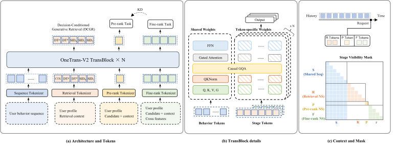
4.1 贯穿级联的单一 Transformer
OneTrans-V2 的输入分为两部分。独立于候选项的用户行为序列 在整个级联中共享。非序列特征集 、 和 分别特定于召回、粗排和精排；每个仅由其自身阶段分词为跟随共享用户上下文的词元。遵循 OneTrans（§3），OneTrans-V2 在每个 Transformer 块（TransBlock）内对两种词元类型应用 混合参数化。 中的行为词元共享一组注意力（）和 FFN 参数，而每个阶段的非序列词元（我们称之为 阶段特定词元）使用各自非共享的、词元特定的 和 FFN 参数。这允许所有三个阶段在一个 Transformer 内运行，同时保留其异构特征表示；每个块的内部设计见 §4.3。
共享因果用户上下文。 用户行为序列 （属于用户 ，也写作 ）按行为事件到达的顺序列出，每个新事件追加到序列中。为避免未来信息泄漏，我们遵循 OneTrans Zhang et al. (2026)，用因果注意力块对 建模，使得每个位置的隐藏状态仅概括序列中位于其之前的行为。
阶段可见性掩码。 一次请求是用户的一次推荐调用，由所有三个阶段依次服务。一次曝光的阶段特定词元属于在某个时间戳发出的请求。我们将它们锚定到该时间戳之前已到达的最后一个行为，因此阶段特定词元关注到其锚点为止的行为前缀，而不关注之后到达的任何行为。在同一曝光和阶段内，阶段特定词元还根据其预定义的词元顺序遵循因果注意力。来自不同阶段或不同曝光的词元相互掩蔽，且行为词元从不关注阶段特定词元，因此用户上下文可以被编码一次并由每个阶段读取。尽管阶段特定词元彼此隔离，但所有三个任务联合优化共享用户上下文，使召回、粗排和精排能够共享用户建模而不混合其非序列特征。来自不同请求的曝光如何在该掩码下共享一个编码序列是 §4.4 的主题。
4.2 任务表述与联合优化
给定上述共享用户上下文和阶段特定词元，OneTrans-V2 联合优化三个异构任务，即用于召回的自回归生成以及用于粗排和精排的判别式预测。
4.2.1 决策条件生成式召回
在生成式召回中，模型并不对给定的候选物品打分。相反，它以用户上下文为条件，自回归地生成物品标识符。为了将 §1 中面向各目标的通道合并到这样一个模型中，我们需要两样东西。第一，物品需要一个可被生成的结构化标识符。第二，模型需要对每个通道所构建的决策有一个内部表示，以便业务目标能够引导它。语义标识符提供了第一点，而决策条件生成式召回（Decision-Conditioned Generative Retrieval，DCGR）提供了第二点。
语义标识符。 遵循此前的生成式召回工作 Rajput et al. (2023); OneRec Team (2025)，我们用三级语义标识符（SID） 来表示每个物品，该标识符通过对物品的多模态嵌入施加残差量化 k-means（RQ-KMeans）Luo et al. (2024) 得到。三个编码构成由粗到细的层级结构，模型按此顺序自回归地生成它们。召回被实现为在这棵编码树上宽度为 的束搜索，而不是对固定候选集进行一轮打分。由于多个物品可能共享相同的编码，映射到某个被召回 SID 的所有物品都会被返回。
决策条件生成式召回。 朴素的生成式召回直接从用户上下文走向 SID 编码，中间没有任何可观测的内容。DCGR 插入了一个中间步骤。在生成 SID 编码之前，模型首先预测关于即将发生的交互的若干决策，即其购买等级、消费等级、探索等级和供给类型（用户是否会购买、以何种价值购买、该品类对用户而言有多新、以及该物品是否为广告）。这些预测构成一个决策前缀，即置于 SID 编码之前的若干决策词元。思维链提示 Wei et al. (2023) 展示了语言模型从中间步骤中获益的程度，而 DCGR 将此类步骤加入召回，并由日志监督，而不是自由生成。这里的决策是模型预测的结果，而不是用户显式做出的选择。这四个维度张成一个决策空间，每个业务目标对应该空间中的一个区域，而不是一个单独的召回通道。
考虑单次请求。用户到来后，在生成任何物品之前，模型先预测即将发生何种类型的交互。它可能预测会以中间消费等级发生购买、探索等级较高、且为自然供给。随后它以该预测为条件解码 SID 编码，因此它返回的物品是契合那种形态交互的物品。如果它预测的是低探索等级下不发生购买，那么同一用户上下文会生成不同的物品。这就是为什么一个模型可以服务多个目标。目标不是模型外部做出的路由决策，而是模型自身所预测的前缀中的一个区域，而业务偏移会将预测推向该区域。
决策分为两种类型。并行决策仅依赖用户上下文，并在同一位置被预测。依赖决策还依赖于更早的决策，因而占据更靠后的、链式位置。 召回特有的特征 被汇总为一个上下文词元 CTX，它紧随共享的行为序列 。以 为条件，模型从 CTX 位置起，一个位置接一个位置地生成，
| (1) |
四个决策维度的标签直接取自行为日志。
并行决策。 有三个维度可以仅从用户上下文预测。 购买等级（，order count 的简称）表示该交互最终是无购买、一次购买还是多次购买。由于 已经标记了未转化交互，因此不需要单独的购买指示。 探索等级（，discovery 的简称）表示候选品类相对于用户近期行为有多新。 供给类型（，advertising 的简称）表示该物品是自然物品还是广告物品。 这三个维度各自通过其轻量决策头，从 CTX 位置的隐藏状态预测得到。它们的决策嵌入被求和为一个并行决策词元 ，占据下一个位置。我们求和而非链式排列它们，原因有二。链式排列会迫使我们在没有依赖关系可供排序的维度之间选择解码顺序。这一选择并非中性，因为最先解码的维度会得到最好的服务（§7.5）。求和还能保持决策前缀较短。
依赖决策。 本文中唯一的依赖决策是消费等级（，average order value 的简称），即每笔订单的价值区间。我们有意不将交易价值建模为单一的 GMV 标签，因为这种标签无法区分一篮子多笔低价订单与一次高价购买。将交易价值拆分为购买等级和消费等级后，消费等级只有在购买等级已知时才有意义。因此它在 之后被预测，并由依赖决策词元 表示。随后，SID 编码以用户上下文和预测的决策为条件，逐个生成。
DCGR 目标。 DCGR 将决策与物品的联合分布建模为
| (2) |
其中 表示并行决策， 表示完整的决策前缀。 按上述方式组织两类决策后，
| (3) |
第一行从用户上下文预测决策。第二行在给定决策的条件下生成物品。 所有决策和 SID 预测均按式 1 的自回归顺序以交叉熵训练，并在其对应位置提供真实决策（教师强制）。由此得到的召回损失为 。
业务引导。 解码是在决策前缀和 SID 编码上的束搜索，因此返回哪些物品取决于各决策前缀相互之间的排序。业务目标在解码时通过改变该排序来介入。解码分三步进行。第一，在缓存的用户上下文上对决策的每个有效组合 打分，从而为每个决策前缀给出 （图 3）。第二，为每个这样的分数加上一个业务偏移 。第三，束搜索将前缀扩展为 SID 编码，并按如下方式对每个前缀及其编码一起排序：
| (4) |
这里 为维度 的每个取值分配一个偏移。例如，对最高消费等级施加正偏移，会将召回引导向更有价值的订单。 在前缀上对这些偏移求和，而单个标量 设定整个偏移的强度。
该偏移是一种软偏好，而非规则。式 4 的第一项对应分布 ，它是 的解，即离线强化学习 Peng et al. (2019) 中使用的 KL 正则化改进步骤。也就是说，偏移提高了决策的预期业务价值，KL 惩罚使决策保持接近模型从日志中学到的内容，而 决定它们可以移动多远。Multi-Game Decision Transformer Lee et al. (2022) 将同样的思想应用于单一结果分数。由于 是在各维度上的求和，指数项分解为 ，即每个目标一个因子。因此，每个业务目标都在其自身维度上获得各自的偏移，而不是一个全局权重。
由此得出三点。第一，偏移仅作用于式 4 的决策部分。它改变哪些决策胜出，而物品项 （属于式 2）保持不变，因此在给定决策下，模型仍返回它认为最可能的物品。第二， 给出模型自身的排序， 越大，偏离该排序越远，因此偏移是在调整该排序，而非覆盖它。第三， 在线设定。因此，向现有维度已能表达的目标进行引导无需重新训练。新目标成为新的决策维度，这会在同一模型上增加一个轻量决策头，而不是增加一个自带模型的召回通道。如果新维度没有条件依赖关系，它会被求和进 ，决策前缀不会变长。
物品侧的引导。 业务偏移决定哪个决策胜出。同样的设计为第二种控制留出了空间，即决定生成的物品在多大程度上遵循该决策。无分类器引导 Ho and Salimans (2021)——最初为扩散模型开发、后来应用于语言模型 Sanchez et al. (2024) 的技术——可以提供这种控制。其思想是用同一模型对每个 SID 编码打分两次，一次带决策前缀，一次不带，并将两次分数之差视为决策的影响。
为使第二次打分成为可能，在一小部分训练样本上用特殊的空词元 替换决策前缀，从而让模型也学会在未被告知任何决策信息时预测 SID 编码。在解码时，每个编码将按如下方式打分：
| (5) |
方括号衡量了知道决策 对编码分数的改变程度，权重 则缩放这一改变。当 时，分数等于式 4 中的普通物品项。当 时，决策的影响被放大，因此召回的物品更紧密地遵循它。当 时影响被削弱，当 时决策被忽略。由于两次分数来自同一模型，它们之差在很大程度上不受任一分数校准好坏的影响。计算第二次分数需要解码器的第二遍前向，但两遍读取同一份缓存的用户上下文，且仅在前缀和 SID 位置不同，因此额外的工作仅限于束搜索。这样一来，引导将有两个在线参数。偏移 决定做出哪个决策，权重 决定物品在多大程度上遵循它。§7.4 中的干预表明，解码器对其前缀的响应足够强，使得 能够产生效果。该扩展尚未部署，我们将其评估留待未来工作。
4.2.2 判别式排序任务
粗排。 粗排对召回返回的每个候选打分，因此其每候选预算在级联中最为紧张，它既无法读取完整的非序列特征集，也负担不起为每个候选分配许多词元。因此我们将粗排限制在一个轻量特征子集 上，并让其分词器将整个子集压缩为单个候选词元。该词元在阶段可见性掩码下关注共享的用户上下文。粗排头读出其最终状态，并预测 CTR 与 CVR 的粗排目标集 ，每个目标由二元交叉熵损失 优化，
| (6) |
其中 和 分别表示目标 的标签和预测概率。
精排。精排只对通过粗排的候选进行打分，并决定最终顺序。因此，其主要约束从每个候选的吞吐量转变为排序保真度，而将其丰富的候选特征池化为一个词元会抹去这种保真度所依赖的特征异质性。遵循 OneTrans Zhang et al. (2026)，我们让精排消费完整的非序列特征集 ，并将其保留为多个词元，而不是粗排所使用的单个词元。这些词元在相同的阶段可见性掩码下关注共享的用户上下文，其产生的状态由精排头读出，用于预测精排目标。与粗排不同，精排预测的目标多得多；我们聚焦于核心目标 CTR 和 CVR，记为 ，同样采用二元交叉熵损失 ，
| (7) |
其中 和 分别是目标 的标签和预测概率，如式 6 所示。
知识蒸馏。共享用户上下文使粗排和精排获得共同的表示，但每个阶段仍学习各自的打分函数，二者可能对同一批候选给出不同的排序。这会造成问题，因为被粗排丢弃的候选永远无法被精排恢复，所以两个阶段之间的每一次分歧都会永久移除那些本会被精排排在最前面的物品。为解决这一问题，我们在两个排序阶段之间采用知识蒸馏 Hinton et al. (2015)，以精排任务为教师、粗排任务为学生。于是，拥有更丰富候选特征的阶段监督成本更低阶段所产生的排序。我们沿用 logit 标准化的均值中心化步骤 Sun et al. (2024)，但将标准差替换为固定温度 。对每个粗排目标 ，教师 logit 和学生 logit 分别用各自的均值 和 进行中心化，所得学生概率以二元交叉熵损失 对教师概率进行训练，并对各目标求和，
| (8) |
其中 为 sigmoid 函数。为防止蒸馏损失影响教师，我们对教师 logit 做 detach，使其只受精排目标塑造，而对齐只移动学生。得益于 OneTrans-V2 的单模型设计，该蒸馏既不需要单独训练的教师，也不需要离线蒸馏阶段。我们在同一次反向传播中同时优化 与各任务损失，因此随着教师自身变强，学生持续改进。
4.2.3 总体目标
OneTrans-V2 通过 进行优化，它是三个任务目标与蒸馏损失 的加权和，
| (9) |
其中 、、 和 控制四个目标的相对贡献。
4.3 扩展与稳定化
扩展 OneTrans-V2 需要在有界激活计算和保持有效注意力与稳定优化的前提下增大模型容量。为此，我们结合参数高效扩展、稳定化和优化技术，并重新审视哪些输入设计在规模增大时仍然有益。
TransBlock 设计。图 2(b) 展开了 TransBlock 的内部结构。每个块采用 pre-norm 布局，即 RMSNorm Zhang and Sennrich (2019) 位于注意力和 FFN 子层之前，每个子层之后接残差连接。分支输出由残差乘数 缩放，该乘数用于 个块，因此随着模型加深，残差流保持有界。在注意力子层中，查询和键按头进行 RMS 归一化（QKNorm Henry et al. (2020)），门控注意力 Qiu et al. (2025) 在输出投影之前对注意力输出进行调制。FFN 子层是 稀疏混合专家（MoE），将每个词元路由到一小部分专家。这在增大参数量的同时使每个词元的激活计算量大致恒定。算法 1 概括了一个块的前向传播，下面我们详述各组件。
分组查询注意力。在注意力方面，我们采用分组查询注意力（GQA）Ainslie et al. (2023)。查询头被划分为若干组，每组共享一个键/值头，因此一层的键/值头数量远少于查询头。这一节省很重要，因为共享行为序列的键/值缓存只计算一次，然后被所有三个任务的阶段特定词元读取。在召回过程中，它还会在解码器的各束之间广播。因此，其大小决定了每个交叉注意力步骤的内存占用和内存流量。GQA 按组大小成比例地缩小该缓存，且不损失质量（§7.6）。只需阶段特定词元与共享行为序列在键/值头数量和头维度上保持一致。因此，二者可以在相同的缓存键和值上自由使用不同数量的查询头。
稀疏 MoE。遵循 DeepSeekMoE Dai et al. (2024)，OneTrans-V2 中的 FFN 是由 细粒度专家构成的稀疏 MoE，即中间宽度较窄的 SwiGLU 网络 Shazeer (2020)。一个共享专家始终激活，其余构成一组路由专家。对每个输入，一个轻量路由器为每个路由专家产生一个分数，并选出固定数量的最高分路由专家。其分数被重新归一化使总和为一，并乘以固定的路由专家缩放因子。子层输出为共享专家的输出加上所选路由专家的加权和。受 DeepSeek-V3 DeepSeek-AI (2024)启发，我们采用 sigmoid 路由器而非 softmax 路由器。softmax 会耦合各专家，因为提高一个专家的分数必然会降低所有其他专家。这会将路由器推向赢者通吃的路由方式，并使每个分数的尺度与专家总数挂钩。sigmoid 则以固定尺度独立地为每个专家对输入的相关性打分。于是可以同时有多个专家被判为相关，且随着专家增加分数仍具可比性，这便于在更大专家数量下训练。
门控注意力。 我们采用门控注意力 Qiu et al. (2025)，它对注意力输出施加一个按头、依赖输入的 sigmoid 门。门 logit 由归一化后的注意力输入通过融合 QKVG 投影的额外切片产生。每个注意力头的 softmax 加权值在输出投影之前与这些门 logit 的 sigmoid 逐元素相乘。因此，门控制的是每个头写回残差流的内容，而非注意力分布本身。它位于值与输出投影之间，增加了一个非线性，防止二者坍缩为单一线性映射。它还产生依赖输入的稀疏性，因此对当前词元无信息的头可以被关闭，而不是将注意力质量放在汇位置（sink position）上。这抑制了注意力汇和巨量激活，并改善了训练稳定性。
稳定化技术。 随着模型在宽度和深度上增长，训练变得更困难。激活、梯度和每步权重更新的尺度都随模型规模漂移，因此在一个规模下稳定的配置在下一个规模可能发散。这样每次扩展都需要重新进行超参数搜索，而在这个规模上每次试验都很昂贵。因此，我们对主干进行参数化，使其训练动态在模型增长时保持不变，宽度方面遵循最大更新参数化（P）Yang et al. (2021)，深度方面遵循 Depth-P Yang et al. (2024)。二者都基于一个原则。扩展改变每层求和的项数。因此，初始化、乘数和学习率必须一起选择。目标是每个隐藏激活及其每步变化都保持在一个既不随模型规模增长也不消失的尺度上，我们将其写作 。对于宽度，考虑一个隐藏层 ，其输入为 ，权重矩阵为 ，其中 为宽度。扇入初始化，即， 的元素的方差为 ，已经使 保持在 ，因为其 项在初始化时互不相关。然而，学习率为 的 Adam 步会将 的每个元素改变约 。由此产生的变化 对 个与 相关的项求和，因此按 增长。P 通过将每个隐藏权重的 Adam 学习率按 缩放来抵消这种增长。对于深度，设 为块数，每块向残差流添加一个注意力分支和一个 FFN 分支。该流对在初始化时近乎不相关的 个分支输出求和，因此 残差乘数使前向信号保持在 。然而，不同分支的更新通过共享损失而相关，因此会累加而非抵消，所以总更新按 增长。残差乘数已经抵消了这种增长中的一个 因子，在 Adam 下学习率必须按 缩放以抵消另一个。表 1 列出了相对于宽度 和深度 的基模型、隐藏层的相应规则，这些规则以宽度乘数 和深度乘数 表示。
另外两个量是在训练过程中而非随模型规模漂移的。注意力 logit 随查询和键投影的范数增长，因此我们对查询和键施加 QKNorm Henry et al. (2020)。这将 logit 保持在固定范围内，并防止 softmax 坍缩到单个位置。权重范数本身在 Adam 下增长，有效学习率随之缩小。因此，我们用 AdamW 优化稠密参数，其解耦的权重衰减 Loshchilov and Hutter (2019) 将范数保持在稳定水平。
多模态嵌入。 容量还改变了物品的多模态嵌入应如何进入模型。既有做法 SimTier Sheng et al. (2024) 并不直接输入多模态嵌入。对每个行为序列，它计算候选与序列中每个物品之间的余弦相似度，将这些分数汇总为直方图，并将直方图作为稠密特征输入模型。OneTrans-V2 则直接输入多模态嵌入，作为每个行为物品和候选的辅助信息。如 §7.8 所示，这一选择只有在容量充足时才有益。
| Hidden-layer quantity | Base model | Width rule (P) | Depth rule (Depth-P) |
|---|---|---|---|
| Initialization variance of | (i.e., ) | unchanged | |
| Residual multiplier | unchanged | (i.e., ) | |
| Adam learning rate |
4.4 序列原生训练
更大的主干使每个训练步骤都更昂贵，而其中最大的部分是编码长行为序列。传统推荐训练会多次付出这一代价，因为每个阶段都构建自己的训练样本，每次曝光一个或每次请求一个，而每个样本都携带自己的一份序列副本。因此，一个有上百次曝光的用户，其序列会被复制并编码多达上百次。 RLB Guan et al. (2026) 和 MTGR Han et al. (2025) 等方法通过围绕共享用户上下文对曝光分组来减少这种冗余。 SNT 将这种复用扩展到整个级联。序列只编码一次，每次曝光都从该编码读取，无论它来自哪个请求、哪个阶段。
有两个性质使这一点成为可能。第一，行为序列是仅追加的，并用因果注意力进行编码Zhang et al. (2026)。 因此，每个位置上的隐藏状态只汇总到该位置为止的行为，而整个序列的编码会原样包含每一个更早前缀的编码。 第二，每个曝光保留自己的请求身份、时间戳、任务身份、阶段特定特征和标签，但不再携带行为序列的副本。 在模型中，一个曝光以附加到共享编码上的阶段特定词元形式出现，并处于阶段可见性掩码之下，它只读取到其请求时间为止的前缀，如下一段所述。为了让这种共享在实践中可行，SNT 还改变了训练样本的分组方式。曝光按用户分组，因此一个用户在一个时间窗口内（用户窗口）的曝光会与该用户行为序列的一份副本一起存储和读取。该窗口的长度是一个配置选项（§7.9）。
每个曝光看到什么。 形式上，曝光 锚定在位置 上，该位置是 中截至其请求时间已经到达的最后一个行为的位置（§4.1）。在阶段可见性掩码下，它只注意直到 的前缀。来自同一请求的曝光共享同一个锚点。因此，尽管序列是为所有这些曝光一次性编码的，每个曝光所看到的恰好是模型在该请求在线时所看到的。我们称之为一个曝光的因果视图，图 4 以两个请求为例说明了这一点。
这些视图随着序列增长而保持有效，因为序列是仅追加的。令表示第个请求所看到的序列。下一个请求所看到的序列为
| (10) |
其中表示拼接，包含两个请求之间到达的行为。由于新行为是追加的，从不插入到更早的前缀中，因此在上定义的因果状态和锚点在中仍然有效。
请求相对时间编码。 锚点决定了一个曝光能看到哪些行为，但不决定这些行为有多旧。昨天的行为对于今天发出的请求，其重要性不同于一个月后发出的请求。然而两个请求读取的是同一个已编码序列。因此，我们让阶段特定词元与行为序列之间的注意力取决于请求与行为之间的时间差。我们使用基于时间戳的变体Pardoe et al. (2026)，其基础是旋转位置编码Su et al. (2024)。请求时间处曝光的查询按旋转，事件时间处行为的键按旋转。对于时间通道，注意力项随后满足
| (11) |
其中表示时间戳的旋转变换。该项仅取决于，而不取决于该行为在序列中的位置。同一曝光的词元共享一个请求时间，因此它们的相对旋转相互抵消。行为自注意力保持不变。我们使用多个固定时间周期来捕捉短期和长期动态。键的旋转仅取决于行为自身的时间戳。因此，旋转后的键只计算一次，并被每个请求和阶段重用，每个曝光只贡献自己的查询和锚点。
与以曝光为中心的样本相比，SNT 在相同硬件预算下实现了的训练加速（§7.9）。
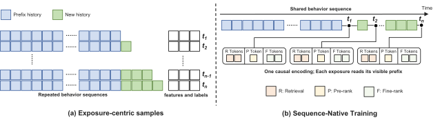
5 服务与系统优化
5.1 服务流水线
尽管 OneTrans-V2 作为一个 Transformer 联合训练，但服务仍遵循原有的召回 粗排 精排级联结构，每个阶段只执行自己的候选侧计算。
共享用户上下文。 对于来自用户的在线请求，行为序列首先由共享因果 Transformer 处理，以产生可重用的用户上下文缓存。随后，同一个被召回、粗排和精排消费，因此长行为序列每个请求只编码一次，而不是每个阶段编码一次。 召回消费以及召回特定特征，并执行 DCGR 解码，对前缀分数应用§4.2.1的业务偏移，然后在 SID 层级上进行束搜索。 粗排和精排是在同一个上的非自回归候选打分过程。 粗排使用轻量特征集对召回的候选进行打分，而精排仅对存活下来的候选应用更丰富的。 因此，尽管用户上下文是共享的，候选集仍会在级联中持续缩小。
5.2 解码与内核优化
召回解码优化。 召回首先生成决策前缀，然后用束搜索解码 SID 码。 两者都是逐步解码的，因此其延迟由顺序步数和每步工作量决定。我们减少前缀的顺序步数，并减少 SID 解码的每步工作量。 对于决策前缀，每个维度的词表都很小。购买等级 有三个值，供应类型 有两个值，发现等级 和消费等级 各有几个值。它们的乘积足够小，可以在一次前向传播中打分。 因此，我们不是逐一解码并行和链式位置，而是枚举所有有效组合，这些组合的元素为 、定义于式 3，并在一次对缓存用户上下文的前向传播中对它们打分。这将前缀从多个顺序步压缩为单个打分步骤，业务偏移正是在此起作用。 对于 SID 解码，记 为束宽，记 为搜索最终返回给粗排的物品数。我们将所有束–词元对上的全局 top- 替换为两阶段 top-，该过程首先保留每个束的 个最佳扩展，然后从中选出全局 top-。 这恰好得到相同的 top- 集合。中间候选池从束宽乘以词表大小缩小为每束 个，从而相应削减每步的工作量。
内核融合。 除了上述解码改动之外，一组内核级优化提高了训练和服务中每次前向传播的模型 FLOPs 利用率（MFU）。在现代 GPU 上，利用率由 GEMM 的大小和数量以及它们之间逐元素操作的内存流量决定。因此，我们让 GEMM 更大且更少，并融合其间的所有内容。阶段特定词元与共享行为序列之间的注意力运行在 FlashAttention 风格的内核Dao et al. (2022)上，其内置的阶段可见性掩码在一次调用中覆盖一个用户的所有候选，无需填充或实体化注意力矩阵。在 TransBlock 内，查询、键、值和门投影作为一个无偏置通用矩阵乘法（GEMM）发出，其输出被就地消费。QKNorm 由一个 RMSNorm 内核应用，该内核通过偏移而非复制来寻址查询和键切片。SwiGLU 的门和上投影同样合并为一个 GEMM。每个融合内核都编写为利用现代 GPU 的高效指令。例如，RMSNorm 内核保证每个词元的隐藏向量从16字节对齐的地址开始，因此编译器可以发出128位向量化加载，每条指令获取八个16位值。
低精度服务。 与 LLM 不同，推荐模型消费许多浮点特征，其特征值的范围和精度必须被保留，因此服务默认以 FP16运行。Transformer 主干本身更宽容，因为每个子层之前以及查询和键上的 RMSNorm 使其激活保持在有界尺度上。因此，我们将 SwiGLU GEMM（约占一个 TransBlock FLOPs 的三分之二）进一步降至 FP8。服务还允许一项训练无法做到的融合。由于没有需要中间激活的反向传播，合并的门和上 GEMM、下 GEMM 以及 SwiGLU 的缩放残差更新作为单个内核运行。
6 实验结果
6.1 实验设置
数据集。 我们在来自大规模工业推荐系统的生产日志上离线评估 OneTrans-V2。这些日志使用与 OneTransZhang et al. (2026)相同的日志记录、特征快照和标注流水线收集，但时间窗口不同，因此绝对数字与那里报告的数字不可比。生产日志按时间顺序保留，每个特征都在曝光时记录，以避免时间泄漏并保持离线评估与在线服务一致。点击和订单等标签在生产所使用的固定窗口内累计。所有日志均在遵守严格隐私政策的情况下收集，个人可识别信息经过匿名化和哈希处理。
任务与指标。 我们评估所有三个阶段。召回是生成式的，用束搜索解码 SID 码，而不是对固定候选集打分。遵循 UniSGRSun et al. (2026b)，我们用 HitRate@（HR@）来衡量它，即真值物品的 SID 位于束搜索返回的 top- SID 中的请求比例，并报告和。粗排和精排对给定候选集打分，我们报告 CTR 和 CVR 的 AUC 和 UAUC（曝光加权用户级 AUC）。两个阶段及其基线都在相同的曝光和标签上训练和评估，不使用未曝光候选或采样负例。
遵循 OneTrans Zhang et al. (2026) 的下一批次协议，我们按时间顺序流式处理数据，并在每个小批次更新模型之前对其打分，因此不会对模型已经训练过的数据做出预测。指标按天计算，并在评估期内进行宏平均。我们还报告服务 GFLOPs，即模型在部署配置下为一个请求花费的浮点成本，按其服务的各阶段求和。11 1 OneTrans Zhang et al. (2026) 报告的是训练 FLOPs。这里我们改为报告服务 FLOPs，因为服务一个请求的成本才是部署级联的 QPS 和延迟的约束。 这是实际执行的成本 ，对应在 OneTrans 所述优化之后执行。例如，一个阶段为一个请求打分的候选共享行为序列的一次编码，因此该编码只计一次，而不是每个候选计一次。
实现。 我们在两个规模上评估 OneTrans-V2（§4）。我们的默认规模 OneTrans-V2L（L 表示 large）堆叠了 §4.3 的 TransBlock，每个请求成本为 GFLOPs。OneTrans-V2S（S 表示 small）是同一设计的更轻量变体，每个请求成本为 GFLOPs，成本占比约为 ，比较基准为 OneTrans-V2L。对于召回任务，我们使用每层 条目的码本将每个物品量化为三个 SID 码。决策前缀涵盖四个维度（、、、），分布在两个词元位置上。
训练期间，我们采用双优化器策略。稀疏嵌入使用 AdaGrad Duchi et al. (2011) 优化，学习率为 ，初始累加器值为 。稠密参数使用 AdamW Loshchilov and Hutter (2019)22 2 权重衰减遵循现代 LLM 训练的惯例，即采用解耦收缩 ，权重衰减系数为 ，按学习率 缩放，而不是采用与学习率无关的步长 ，后者是 TensorFlow 旧版 AdamW 的做法。（Adam ，，，权重衰减 ）。在 下，该优化器不携带动量，退化为带有二阶矩偏差校正和解耦权重衰减的 RMSProp。我们沿用 AdamW 这一名称来指代其实现。除 §4.3 中的稳定化技术外，我们对稠密层和稀疏层均使用全局梯度范数裁剪 Pascanu et al. (2013)，并以 BF16 进行训练，每 GPU 批大小为 ，所用 GPU 数量为 16。在训练目标（式 9）中，召回、粗排和精排损失的权重分别为 、 和 ，蒸馏损失的权重为 ，温度为 。式 8 的中心化均值以动量 在训练批次上维护为指数移动平均。
基线。我们将 OneTrans-V2 与以下基线进行比较，所有基线均使用相同的特征进行训练：
- •
-
•
OneTrans-Lite 是我们已部署的粗排模型，是 OneTrans 的紧凑变体，以适应粗排更紧张的计算预算。
- •
-
•
UniSGR Sun et al. (2026b) 和 UniPinRec Li et al. (2026) 是两个较新的框架，将生成式召回与下游排序组件统一起来。在我们的复现中，我们将 UniPinRec 的轻量级排序任务映射到粗排，将 UniSGR 的多目标排序任务映射到精排，并按照其原始实现来解码 UniSGR 的召回，其中任务词元由外部设定，而不是从行为序列中预测。由于每个模型只耦合两个阶段，我们在该映射所代表的阶段上比较每个模型。UniPinRec 的召回是唯一的例外，因为它不是生成式的，而是通过对物品嵌入进行最近邻搜索来召回，因此我们不会将其与本文报告的基于 SID 的生成式召回模型进行比较。
6.2 离线性能
| Type | Model | Retrieval | Pre-rank | Fine-rank | Efficiency | |||||||
| HR@1 | HR@10 | CTR | CVR | CTR | CVR | GFLOPs | ||||||
| AUC | UAUC | AUC | UAUC | AUC | UAUC | AUC | UAUC | |||||
| (a) Single Model | OneTrans-GR | 0.0545 | 0.3112 | N.A. | N.A. | N.A. | N.A. | N.A. | N.A. | N.A. | N.A. | 202 |
| OneTrans-Lite | N.A. | N.A. | 0.7965 | 0.7080 | 0.9102 | 0.7365 | N.A. | N.A. | N.A. | N.A. | 4 | |
| OneTrans | N.A. | N.A. | N.A. | N.A. | N.A. | N.A. | 0.8084 | 0.7393 | 0.9139 | 0.7428 | 69 | |
| (b) Unified Models | UniPinRec | N.A. | N.A. | 0.8046 | 0.7212 | 0.9113 | 0.7506 | N.A. | N.A. | N.A. | N.A. | 325 |
| UniSGR | 0.0483 | 0.2964 | N.A. | N.A. | N.A. | N.A. | 0.7976 | 0.7209 | 0.9130 | 0.7328 | 117 | |
| OneTrans-V2S | 0.0660 | 0.3441 | 0.8053 | 0.7372 | 0.9128 | 0.7534 | 0.8171 | 0.7532 | 0.9163 | 0.7589 | 239 | |
| OneTrans-V2L | 662 | |||||||||||
表 2 总结了 OneTrans-V2 及相应基线在三个阶段的性能。现有级联，即用于召回的 OneTrans-GR、用于粗排的 OneTrans-Lite 和用于精排的 OneTrans，合计每次请求花费 GFLOPs。这是下文比较的参考基准。
OneTrans-V2S 以 GFLOPs 服务所有三个阶段，略低于该参考基准，但在其服务的每个阶段都超越了三个基线中的对应项，例如提升幅度为 ，对应指标为召回 HR@1，以及提升幅度为 ，对应精排 CVR UAUC。OneTrans-V2L 花费达到级联的 倍，并将额外的计算转化为全部十项指标上更大的增益。它在召回 HR@1 上比 OneTrans-GR 提升 ，在粗排 CTR UAUC 和 CVR UAUC 上比 OneTrans-Lite 分别提升 和 ，在精排 CTR UAUC 和 CVR UAUC 上比 OneTrans 分别提升 和 。两个变体在其覆盖的每个阶段也都超越了 UniPinRec 和 UniSGR，这两个较新的模型统一了多个阶段。在匹配架构和参数预算的情况下，仅由联合训练带来的那部分增益在 §7.1 中单独隔离分析。
6.3 在线 A/B 性能
我们通过在大规模工业推荐系统中的在线 A/B 测试来评估 OneTrans-V2 的业务影响。对照组由现有的 OneTrans-GR、OneTrans-Lite 和 OneTrans 级联服务。在实验组中，单个 OneTrans-V2L 替代了全部三者，其服务采用 §5.2 的堆栈。流量在用户层面通过基于哈希的随机化进行划分，每组分配 的流量。
与对照组相比，OneTrans-V2 将人均 GMV 提升 。它还将用户活跃天数提升 ，因此其推荐的物品能更频繁地促使用户回访。这些增益是与一个由三个分别训练、分别服务的模型组成的强级联相比测得的，展示了级联层面统一的潜力。
OneTrans-V2 的服务效率也更高。我们将 QPS 定义为每秒通过所有三个阶段完成的请求数。在相同硬件预算下，实验组的 QPS 为对照组的 ，尽管 OneTrans-V2 每次请求执行更多的 FLOPs。更高的 QPS 来自服务堆栈，以及每次请求只编码一次行为序列，而不是每个阶段编码一次，§7.9 对两者进行了量化。
7 分析
在本节中，我们分析 OneTrans-V2 的每个组件贡献了什么。除非另有说明，排序结果以 CTR 报告，且每项提升均为相对于相应参考配置的相对变化，而不是 AUC 或 UAUC 的绝对差值。
7.1 联合训练的效果
我们分析联合训练三个任务是否优于分别训练每个任务。在本小节中，联合模型及其分别训练的对应模型共享相同的架构、参数预算、训练数据和训练目标，§6.1 的损失权重保持不变。这包括 §4.2.2 中的蒸馏损失，其中分别训练的粗排从分别训练的精排接收蒸馏。因此，任何增益反映的是联合训练，而不是增加的容量或蒸馏。我们首先分析将粗排与精排合并，然后分析将全部三个阶段一起合并。
| Task | CTR AUC | CTR UAUC |
|---|---|---|
| Pre-rank | +0.09% | +0.17% |
| Fine-rank | +0.12% | +0.21% |
合并粗排与精排。我们从两个排序任务开始，让它们的词元读取一个共享的用户上下文并一起优化。表 3 显示两个任务都优于其分别训练的对应模型。粗排获得 的 CTR AUC 和 的 CTR UAUC，精排获得 的 CTR AUC 和 的 CTR UAUC。因此，这两个任务相互增强而非相互竞争。
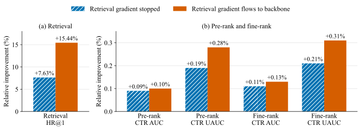
合并全部三个阶段。随后我们加入召回任务并将三者一起训练，图 5 将每个任务与其单独训练的对应模型进行比较。在流入共享用户上下文的召回梯度被停止的情况下，召回任务33 3 在此实验中，联合模型的召回任务与其单独训练的对应模型与 OneTrans-GR 共享相同的主干和计算预算，因此该比较将联合训练与容量因素隔离开来。复用了已由排序任务塑造的共享用户上下文，并获得了 的提升，对应 HR@1 指标。粗排和精排分别获得 和 的 CTR UAUC 提升。44 4 这些结果与表 3 略有不同，因为嵌入表仍然共享，所以即使流入共享用户上下文的召回梯度被停止，召回任务对粗排和精排仍有微小影响。然后我们让召回梯度流入共享用户上下文，使其下一词元预测目标也塑造排序任务所读取的用户上下文。这将召回任务的增益大致翻倍至 ，并将粗排和精排提升至 和 的 CTR UAUC。因此，统一全部三个任务使每个任务都优于分别训练，召回目标进一步增强了用于排序的共享用户上下文。
7.2 排序阶段之间的蒸馏与一致性
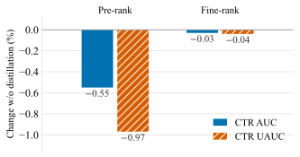
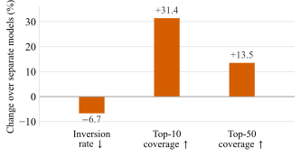
知识蒸馏。上一小节表明联合训练有助于全部三个任务。对于两个排序任务，OneTrans-V2 增加了第二种机制，即 §4.2.2 的知识蒸馏，这是一个额外的损失 ，其中精排的 logits 对粗排的 logits 进行监督。图 6(a) 显示了该损失的贡献。该消融与联合训练比较是正交的，在联合训练比较中两种设置都保留 ；而这里的联合模型去掉了它。在保持架构、数据和所有其他超参数不变的情况下，从 OneTrans-V2 中移除 会使粗排损失 的 CTR AUC 和 的 CTR UAUC。这表明蒸馏在缩小粗排与精排之间差距方面的贡献有多大。精排本身的变化至多为 ，这正如分离的教师 logit 所预期的那样，因此学生的增益并非以教师为代价。
跨阶段一致性。我们进一步分析在线环境中粗排与精排对相同候选物品排序的一致性。共享的用户上下文与蒸馏损失共同将这两个阶段拉近，图6(b)通过两个指标衡量它们的联合效果：倒置率以及top-10与top-50覆盖率。倒置率是两个任务排序不同的物品对所占的比例，top-10覆盖率是粗排的top10中同样出现在精排top10中的比例，top-50亦同。两者均在粗排传递给精排的候选物品上计算。与§7.1中分别训练的粗排和精排相比，OneTrans-V2将倒置率降低了，并将top-10与top-50覆盖率分别提高了和，均为相对变化。因此，两个排序阶段出现分歧的频率更低。更重要的是，粗排传递了精排更多的高排名候选物品，因此精排本应排在前列的物品中，有更少部分在精排看到它们之前就被丢弃。
7.3 DCGR的目标覆盖情况
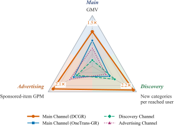
如§1所述，我们生产系统中的召回被拆分为面向不同业务目标的专用通道。主通道由OneTrans-GR服务，面向点击和订单；发现通道推广用户尚未接触过的类目；广告通道召回赞助物品。DCGR通过相应的决策维度在单一模型中表示这些目标。具体而言，购买水平捕捉主通道的点击与订单目标，发现水平捕捉发现目标，供给类型区分自然物品与赞助物品以服务广告。这将三个目标从各自独立的召回通道迁移到一个共享的决策空间中。我们接下来要问的是，单个DCGR是否仍能覆盖各个专用通道原本要提供的目标。
我们通过一项在线召回阶段A/B测试来检验这一点，流量在用户层面等分。在实验组中，OneTrans-V2的召回任务，即DCGR，在主通道中取代OneTrans-GR，发现通道和广告通道被关闭，因此三个通道由单一模型统一。对照组保留已上线的全部三个通道。由于三个通道服务于不同目的，我们用各自的原生指标评估每个目标，即主目标用GMV，发现用每个触达用户的新类目数，广告用赞助物品的千次曝光GMV（GPM）。
图7表明DCGR在单一模型内覆盖了全部三个目标。它产生了对照组主通道的GMV，达到发现通道每触达用户新类目数的，并实现广告通道赞助物品GPM的。因此，单个DCGR在每个目标的原生指标上达到或超过对应的专用通道。
主通道分析。主目标上的GMV增益主要来自更广的曝光，而非每次曝光更高的价值。表4(a)显示，与对照组主通道相比，DCGR使曝光量增加了，点击量增加了。其中一部分量在对照组中是由发现通道和广告通道服务的，因为DCGR现在也服务这部分量。其每次曝光的转化较低。具体而言，千次曝光订单数下降了，千次曝光GMV下降了。然而，更大的曝光量足以抵消这些下降，使总订单数增加，总GMV增加。每次曝光的CTR也提高了。曝光物品的平均价格下降了，表明额外曝光更集中于低价物品。
| (a) Main channel, treatment against control | |
|---|---|
| Exposures | |
| Clicks | |
| Orders | |
| GMV | |
| Click-through rate per exposure | |
| Orders per thousand exposures | |
| GMV per thousand exposures | |
| Average price of an exposed item | |
| (b) Against the discovery channel | |
| Categories new to the user, per reached user | |
| Share of the other channel’s discovery items also reached | / |
| Share of the other channel’s user–category pairs also reached | / |
| User–category pairs formed per day | |
| Conversion of the users only this channel reaches | |
| (c) Against the advertising channel, on sponsored items | |
| Exposures | |
| GMV per thousand exposures | |
| Orders per exposure | |
| Conversion rate | |
| Average order value | |
这些测量比较的是一个通道与另一个通道，而非一个系统与另一个系统。DCGR在实验组中服务的曝光，在对照组中由全部三个通道共同服务，因此它相对主通道单独一者的余量并非它为系统带来的增量价值。因此，图7衡量的是DCGR能够覆盖哪些目标，而非它增加了多少。§6.3中的A/B测试则在全部流量上提供了后者。
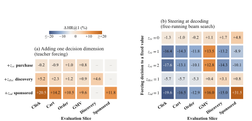
发现与广告分析。我们接下来更详细地考察发现和广告的结果。表4(b、c)分解了DCGR与相应专用通道的对比。
在发现方面，DCGR 每个触达用户达到 个用户新类目，而专用发现通道为 ，从而带来 的增益，其对应图 7。更重要的是，差异主要在于哪些用户收到这些类目，而非召回了哪些物品。DCGR 覆盖了发现通道 的物品，但仅覆盖其用户–类目对的 ；反方向上，相应覆盖率分别为 和 。DCGR 每天形成的用户–类目对数量也是发现通道的 倍，且仅由 DCGR 触达的用户的转化效率是仅由发现通道触达用户的 。因此，两个召回器所依据的物品有大量重叠，但将它们曝光给差异很大的用户。
在广告方面，DCGR在赞助物品召回中也承担了显著更大的角色。赞助物品占其曝光的，而对照组主通道为。在赞助物品上，DCGR服务的曝光量是专用广告通道的，并达到其GPM的。这一增益来自更强的下游转化和价值，而非点击。尽管点击率约低三分之一，DCGR每次曝光的订单数达到，转化率达到，平均订单价值达到。因此，DCGR召回的赞助物品被点击的次数更少，但被购买的次数更多且价值更高。
综合来看，这些结果表明单个DCGR能够覆盖、和所表示的目标，并在各自的原生指标上达到或超过对应的专用通道。这展示了将这些召回目标整合进单一模型的潜力。
7.4 DCGR决策维度分析
上一小节表明，单个DCGR召回器能够覆盖多个专用目标。我们接下来要问的是，决策前缀本身是否携带有用的召回信号，以及它是否控制物品生成。
| Intervention on | CTR | Orders | AOV | GMV |
|---|---|---|---|---|
| None (predicted prefix) | – | – | – | – |
| Force (click) | ||||
| Force to the highest value | ||||
| Business offset, weak | ||||
| Business offset, medium | ||||
| Business offset, strong |
决策维度携带召回信号。图8(a)在仅使用SID的GR模型上每次添加一个决策维度，并通过教师强制提供其真实值。我们测量由此带来的HR@1在点击、加购、订单、GMV、发现和赞助物品切片上的变化。由于所提供的决策描述的是被预测的交互，该实验衡量的是正确决策所提供的信息，而非可部署的端到端召回准确率。
我们还发现这些维度携带的物品信息量各不相同。购买水平使任何切片的变化都不超过，而改善了所有测量切片，产生最大增益，范围从到。这一差异反映了每个决策对物品身份约束的强弱。例如，将赞助交互限制在赞助子集内，而该子集仅占交互的，而对于选择了哪个物品则说明得相对较少。这些增益还延伸到相应目标之外。特别是，除了改善赞助物品召回外，还改善了点击、加购、订单和GMV召回。没有任何测量切片的下降超过。
决策维度控制生成。教师强制表明正确决策具有信息量，但服务依赖的是模型预测的决策。因此，我们在自由运行的束搜索过程中干预一个预测维度。如果SID解码器忽略前缀，强制某个决策将几乎没有效果。图8(b)显示了相反的结果。将强制为赞助物品使赞助物品HR@1提高，GMV HR@1提高，同时将点击HR@1降低。强制多订单使GMV HR@1提高，但使点击HR@1降低。将强制朝向发现使其自身切片提高。因此，改变决策会按预期方向改变召回的物品。
7.5 DCGR决策操控与前缀设计
我们接下来考察在实践中应如何操控和组织这些决策维度。
预测决策与提供决策。预测决策前缀的一种自然替代方案是直接提供期望的决策，正如目标条件化方法所做的那样Sun et al. (2026b)。表5在一项在线召回阶段A/B测试中比较了这种硬条件化与DCGR的业务偏移。我们要么将强制朝向点击，要么将强制为其最高值，或以递增强度应用偏移。硬强制近似于目标操控的极端情况，而偏移则逐渐倾斜模型的预测分布。
硬性强制的作用很像一个面向特定目标的通道。表5显示，强制会使CTR提升，但会使GMV下降；而强制最高的值会使AOV提升，但会使订单量下降、GMV下降。相比之下，业务偏移提供了一种渐进的权衡。随着其强度由弱到强，GMV从上升到，而CTR从变化到。因此，该偏移引导模型朝向某个业务目标，而不会用固定值替换其预测决策。
表6展示了第二次召回阶段的A/B测试，它在系统层面印证了同样的权衡。与表5不同，它统计的是每个用户的全部曝光，而非仅统计归因于DCGR的曝光。仅引导会使订单量提升，但会使GMV下降。加入则以部分订单量换取更高的AOV，使GMV变化转为正值，并在更强设置下达到。因此，这两个维度控制着业务价值中互补的方面。
| Offset applied | Clicks | Orders | AOV | GMV |
|---|---|---|---|---|
| Purchase level only | ||||
| spending level , weak | ||||
| spending level , strong |
组织决策前缀。与的互补作用促使我们分别对购买数量和购买价值建模。将它们替换为单个GMV词元会使按交易价值加权的HR@1下降。单独的购买指示标记也是多余的，因为已经表示未转化交互，再加入一个会使HR@1保持不变。
相互独立的决策维度不应被任意串联，因为串联需要选择解码顺序。表 7 在较早的配置上测试了这一效应，该配置具有三个二值维度，分别对应订单、冷启动和发现。订单目标在首先解码时表现最佳，且订单优先的配置也取得了最高的加权 HR@128。因此，解码顺序会使模型偏向某个目标。DCGR 通过将相互独立的维度合并到并行决策词元 中，并且只串联真正相互依赖的决策，从而避免了这种偏差：其中 跟随 ，且发生在 中。这一设计也缩短了前缀，但其主要优势在于避免顺序偏差，因为各相加维度共享同一个位置，没有解码顺序。
| Position of the order dimension | Weighted | Order | Cold-start | Discovery |
|---|---|---|---|---|
| First (acd, adc) | ||||
| Second (cad, dac) | ||||
| Third (cda, dca) |
7.6 架构分析
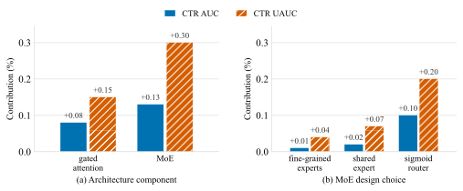
用GQA替换完全多头注意力后，精排质量实际上保持不变，因此GQA更小的键/值缓存不会带来精度损失。图9(a)进一步表明，门控注意力相较于其所替代的常规注意力，贡献了 CTR AUC和 CTR UAUC。
MoE的贡献大于门控注意力，相较于计算量匹配的稠密FFN，获得了 CTR AUC和 CTR UAUC。图9(b)深入考察了MoE块内部。在总参数量相同的情况下，细粒度专家相较于数量更少、宽度更大的专家，贡献了 CTR AUC和 CTR UAUC；而共享专家相较于没有共享专家的相同MoE，贡献了和。sigmoid路由器比两者贡献都大，相较于softmax路由器，贡献了 CTR AUC和 CTR UAUC。55 5 同一配置的重复运行在CTR AUC上相差约，在CTR UAUC上相差约（§7.7），因此大于这一水平的差异应被解读为有意义。
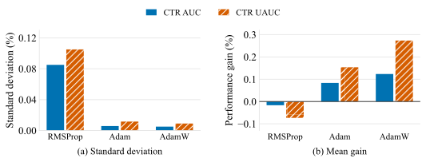
7.7 稳定性分析
我们分析§4.3中引入的稳定性方法的有效性。下面每个实验从OneTrans-V2中移除一种技术，并测量在无该技术和有该技术时，同样的模型加宽分别带来多大增益，每次均以同样方式构建的窄模型为参照。因此，加宽增益因段落而异，因为参照不同，所以增益在同一张图内可比，但跨图不可比。加宽完整配置的增益即图10中AdamW所报告的增益。
AdamW 与权重衰减。RMSPropTieleman and Hinton (2012) 是训练工业推荐模型常用的优化器，此处的 RMSProp 基线使用为已部署模型调优的学习率、 和衰减系数。如图 10 所示，它在重复运行间产生较大的标准差，且加宽模型没有带来增益。随后我们将其替换为 AdamKingma and Ba (2015)，并保持相同学习率与 ，将 设为 RMSProp 的衰减系数，并将 按 §6.1 设置，从而不加入任何动量。此时两个优化器之间的唯一差别是对二阶矩估计的偏差校正。该校正防止了早期更新中有效学习率被抬高。它将 CTR AUC 的标准差从 降至 ，将 CTR UAUC 的标准差从 降至 ，二者均由同样的三次运行估计得到。此时加宽变得有效，将 RMSProp 下的负面结果转变为 CTR UAUC 的增益。在此基础上再加入解耦权重衰减，即 AdamW，可将该增益进一步提升到接近 CTR UAUC，而标准差保持在同样的低水平。
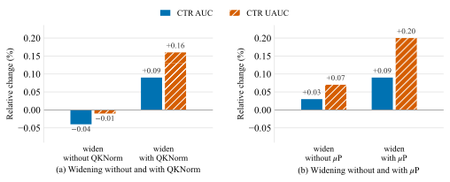
QKNorm。图11(a)表明，不采用QKNorm加宽模型时达不到预期增益，精排变化 CTR AUC和 CTR UAUC。引入QKNorm后，同样的加宽获得了 CTR AUC和 CTR UAUC。
P。图11(b)表明，不采用P加宽模型、并保持原宽度下调优的超参数时，仅带来 CTR AUC和 CTR UAUC的轻微提升。在标准参数化下，模型加宽后这些超参数不再合适，因此每次加宽都需要重新搜索。相比之下，P使最优超参数对宽度保持不变，即超参数迁移Yang et al. (2021)。此时同样的加宽无需任何重新调优即可获得 CTR AUC和 CTR UAUC。
| Setting | CTR AUC | CTR UAUC |
|---|---|---|
| Base depth | – | – |
| deepened, w/o Depth-P | ||
| deepened, w/ Depth-P |
7.8 多模态嵌入与模型容量
我们通过在两种模型规模下比较SimTier与多模态嵌入，来验证§4.3的多模态设计。一种是我们的默认OneTrans-V2L；另一种是小得多的变体OneTrans-V2XS（XS表示超小），其训练成本约低。
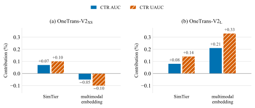
如图12所示，两种规模需要相反的设计。在较小规模下，只有SimTier有帮助，贡献了 CTR AUC和 CTR UAUC。多模态嵌入贡献了和，因此直接输入嵌入会损害这一规模的模型。在较大规模下，两种方式都有帮助，且多模态嵌入成为更有价值的选择，在完全没有任何预计算特征的情况下，贡献了（对照 CTR AUC）和（对照 CTR UAUC）。多模态嵌入与模型自身学到的物品嵌入处于不同的空间，将其中一个映射到另一个是模型必须学习的事情。我们假设小模型缺乏学习这种映射的能力，因此必须为其预计算相似度。OneTrans-V2L能自行学习该映射，并从多模态嵌入中获得的增益大于从其对多模态嵌入的预计算摘要中获得的增益。因此，多模态嵌入应如何进入排序模型并非固定的设计选择，而是容量的函数，在一个规模上确立的做法未必在下一个规模上仍是最佳做法。
7.9 训练与推理加速
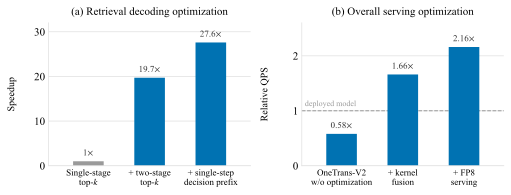
序列原生训练。我们将SNT与图4(a)中以曝光为中心的样本进行比较，后者中每个曝光都是一个单独样本，并各自编码一份行为序列的副本。在相同硬件预算下，对一个用户窗口内的所有曝光共享一次编码可带来的训练加速。在这些实验中，一个小批次按用户窗口组织，每个窗口包含一个用户在一段时间窗口内的曝光。我们按日边界切分窗口，使得没有任何窗口跨越评估日期，从而§6.1的每日指标与基线保持可比。这一选择会限制加速幅度，因为一个窗口只能在其一天的曝光之间共享序列编码。按周或按月切分窗口会进一步提升加速，我们将该配置留待未来工作。SNT还节省存储。每个用户的行为序列只存储一次，而非每个曝光存储一次，这将序列特征存储减少了。同一用户的各曝光相邻存储，使其非序列特征更易于压缩，并将该部分存储减少了一半。
召回解码优化。我们进一步分析了召回任务上的两项解码优化。对于SID解码，图13(a)表明，在线上延迟预算下，两阶段top-将吞吐量提高了，对照的是我们自己的单阶段实现，而非已部署的召回基线。按每个请求计，同样的改动将束搜索延迟降低了。吞吐量的提升超过延迟的降低，是因为吞吐量是在满足延迟预算的最大批大小下测量的。将候选池从束宽乘以词表大小缩小到每束，使得每个GPU在该预算内能够服务大得多的批。优化这一步很重要，因为在此改动之前，召回任务推理时间的花在了top-上。随后在单步中对决策前缀进行评分，消除了顺序的前缀步骤，因此每个剩余步骤承载更大的批，并更好地映射到GPU上。与逐步解码前缀相比，这将测得的延迟降低约，并将累积解码加速提高到。
8 结论
我们提出了OneTrans-V2，一个在工业推荐级联系统中服务召回、粗排和精排的Transformer。OneTrans-V2建立在三个关键思想之上。第一，它通过在各阶段之间共享与候选无关的用户上下文，同时保留每个阶段原生的候选特征和计算，将召回、粗排和精排统一在一个Transformer模型内。第二，DCGR通过将业务目标表示为单个生成过程中的决策，整合了面向特定目标的召回模型。第三，SNT围绕每个用户的终身行为序列重新组织训练，并在多次曝光之间摊销序列编码。这些设计共同统一了跨阶段和跨召回目标的级联，同时使所得的共享骨干网络在生产规模上可实际训练。这种统一实现了计算复用、联合学习和模型内知识蒸馏。它还将先前碎片化的容量汇集到一个共享骨干网络中。我们使用稀疏MoE扩展该骨干网络，以在有界激活计算下增加容量，并使用P式参数化来稳定扩展。在大规模工业部署中，OneTrans-V2将GMV提高了，并与共同设计的服务栈一起，在相同硬件预算下提供了其所取代级联的 QPS。我们相信，OneTrans-V2为从每阶段一模型推荐向统一单模型推荐架构的更广泛转变提供了生产规模的基础。
参考文献
- GQA: training generalized multi-query Transformer models from multi-head checkpoints. In Proc. of EMNLP, pp. 4895–4901. Cited by: §4.3.
- PinRec: unified generative retrieval for Pinterest recommender systems. arXiv preprint arXiv:2504.10507. Cited by: §2.3.
- Decision transformer: reinforcement learning via sequence modeling. In Proc. of NeurIPS, Cited by: §2.3.
- Unified scaling laws for routed language models. In Proc. of ICML, Cited by: §1.
- DeepSeekMoE: towards ultimate expert specialization in mixture-of-experts language models. In Proc. of ACL, pp. 1280–1297. Cited by: §4.3.
- FlashAttention: fast and memory-efficient exact attention with IO-awareness. In Proc. of NeurIPS, Cited by: §5.2.
- DeepSeek-V3 technical report. arXiv preprint arXiv:2412.19437. Cited by: §4.3.
- Adaptive subgradient methods for online learning and stochastic optimization. Journal of Machine Learning Research 12, pp. 2121–2159. Cited by: §6.1.
- Switch Transformers: scaling to trillion parameter models with simple and efficient sparsity. Journal of Machine Learning Research 23 (120), pp. 1–39. Cited by: §1.
- Learning to reach goals via iterated supervised learning. In Proc. of ICLR, Cited by: §2.3.
- Make it long, keep it fast: end-to-end 10k-sequence modeling at billion scale on Douyin. In Proc. of WWW, pp. 7989–7998. Cited by: §2.4, §4.4.
- DeepFM: a factorization-machine based neural network for CTR prediction. In Proc. of IJCAI, pp. 1725–1731. Cited by: §2.1.
- MTGR: industrial-scale generative recommendation framework in Meituan. In Proc. of CIKM, pp. 5731–5738. Cited by: §1, §2.1, §2.2, §2.4, §4.4.
- Query-key normalization for Transformers. In Findings of EMNLP, pp. 4246–4253. Cited by: §4.3, §4.3.
- Distilling the knowledge in a neural network. In NIPS Deep Learning and Representation Learning Workshop, Cited by: §4.2.2.
- Classifier-free diffusion guidance. In NeurIPS Workshop on Deep Generative Models and Downstream Applications, Cited by: §4.2.1.
- Cooperative retriever and ranker in deep recommenders. In Proc. of WWW, pp. 1150–1161. Cited by: §1, §2.2.
- Adam: a method for stochastic optimization. In Proc. of ICLR, Cited by: §7.7.
- Multi-game decision transformers. In Proc. of NeurIPS, Cited by: §2.3, §4.2.1.
- UniPinRec: unifying generative retrieval and ranking at Pinterest scale. arXiv preprint arXiv:2606.00422. Cited by: §2.2, 4th item.
- Decoupled weight decay regularization. In Proc. of ICLR, Cited by: §4.3, §6.1.
- QARM: quantitative alignment multi-modal recommendation at Kuaishou. arXiv preprint arXiv:2411.11739. Cited by: §4.2.1.
- OneRec technical report. arXiv preprint arXiv:2506.13695. Cited by: §1, §2.2, §2.3, §2.3, §4.2.1.
- CADET: context-conditioned ads CTR prediction with a decoder-only Transformer. arXiv preprint arXiv:2602.11410. Cited by: §4.4.
- On the difficulty of training recurrent neural networks. In Proc. of ICML, pp. 1310–1318. Cited by: §6.1.
- Advantage-weighted regression: simple and scalable off-policy reinforcement learning. arXiv preprint arXiv:1910.00177. Cited by: §4.2.1.
- Search-based user interest modeling with lifelong sequential behavior data for click-through rate prediction. In Proc. of CIKM, pp. 2685–2692. Cited by: §2.1.
- Efficiently scaling Transformer inference. In Proc. of MLSys, Cited by: §1.
- RankFlow: joint optimization of multi-stage cascade ranking systems as flows. In Proc. of SIGIR, pp. 814–824. Cited by: §1, §2.2.
- Gated attention for large language models: non-linearity, sparsity, and attention-sink-free. In Proc. of NeurIPS, Cited by: §4.3, §4.3.
- Recommender systems with generative retrieval. In Proc. of NeurIPS, Cited by: §2.3, §4.2.1.
- Stay on topic with classifier-free guidance. In Proc. of ICML, Cited by: §4.2.1.
- Reinforcement learning upside down: don’t predict rewards – just map them to actions. arXiv preprint arXiv:1912.02875. Cited by: §2.3.
- Outrageously large neural networks: the sparsely-gated mixture-of-experts layer. arXiv preprint arXiv:1701.06538. Cited by: §1.
- GLU variants improve Transformer. arXiv preprint arXiv:2002.05202. Cited by: §4.3.
- Enhancing Taobao display advertising with multimodal representations: challenges, approaches and insights. In Proc. of CIKM, pp. 4858–4865. Cited by: §4.3.
- Sona technical report. arXiv preprint arXiv:2608.11015. Cited by: §2.2.
- RoFormer: enhanced Transformer with rotary position embedding. Neurocomputing 568, pp. 127063. Cited by: §4.4.
- OneRanker: unified generation and ranking with one model in industrial advertising recommendation. arXiv preprint arXiv:2603.02999. Cited by: §2.2.
- UniSGR: unified framework for semantic ID generation and ranking. arXiv preprint arXiv:2607.04068. Cited by: §2.2, §2.3, 4th item, §6.1, §7.5.
- Logit standardization in knowledge distillation. In Proc. of CVPR, pp. 15731–15740. Cited by: §4.2.2.
- Ranking distillation: learning compact ranking models with high performance for recommender system. In Proc. of KDD, Cited by: §1.
- Lecture 6.5-RMSProp: divide the gradient by a running average of its recent magnitude. Note: COURSERA: Neural Networks for Machine Learning Cited by: §7.7.
- SORT: a systematically optimized ranking Transformer for industrial-scale recommenders. arXiv preprint arXiv:2603.03988. Cited by: §2.4.
- DCN V2: improved deep & cross network and practical lessons for web-scale learning to rank systems. In Proc. of WWW, pp. 1785–1797. Cited by: §2.1.
- COLD: towards the next generation of pre-ranking system. arXiv preprint arXiv:2007.16122. Cited by: §1.
- Chain-of-thought prompting elicits reasoning in large language models. arXiv preprint arXiv:2201.11903. Cited by: §4.2.1.
- Tensor Programs V: tuning large neural networks via zero-shot hyperparameter transfer. In Proc. of NeurIPS, Cited by: §4.3, §7.7.
- Tensor Programs VI: feature learning in infinite-depth neural networks. In Proc. of ICLR, Cited by: §4.3.
- UniR2: unifying generative recall and multi-objective ranking in a single decoder-only sequence. arXiv preprint arXiv:2607.24439. Cited by: §2.2.
- Actions speak louder than words: trillion-parameter sequential transducers for generative recommendations. In Proc. of ICML, pp. 58484–58509. Cited by: §2.4.
- Root mean square layer normalization. In Proc. of NeurIPS, Cited by: §4.3.
- OneTrans: unified feature interaction and sequence modeling with One Transformer in industrial recommender. In Proc. of WWW, pp. 8162–8170. Cited by: §1, §2.1, §3, §4.1, §4.2.2, §4.4, 1st item, 3rd item, §6.1, §6.1, Table 2, footnote 1.
- COPR: consistency-oriented pre-ranking for online advertising. In Proc. of CIKM, pp. 4974–4980. Cited by: §1.
- Deep interest network for click-through rate prediction. In Proc. of KDD, pp. 1059–1068. Cited by: §2.1.
- TokenFormer: unify the multi-field and sequential recommendation worlds. arXiv preprint arXiv:2604.13737. Cited by: §2.1.
- RankMixer: scaling up ranking models in industrial recommenders. In Proc. of CIKM, External Links: Document Cited by: §2.1.
Appendix A 完整作者列表
基础团队：Hannan Cao, Jun Guo, Haolei Pei, Zhaoqi Zhang, Tianyu Wang, Ziyang Wang, Youchen Sun, Yue Xue, Yucheng Mao, Lintao Yan, Yufei Feng, Shaowei Liu*
架构团队：Rongkun Xing, Feiling Gong, Xinyu Chenli, Cong Xu, Mingge Zhang, Yunjia Zhu, Yajing Zhang, Pengfei Ren, Yue Lin
*：通讯作者，liushaowei.nphard@bytedance.com